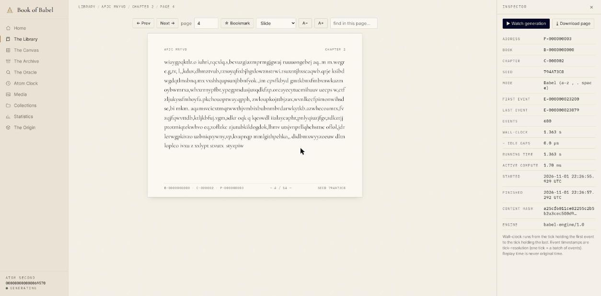

One Atom Second is one generation event: a single character is written onto a page and a single pixel is placed on a board. Each event is recorded in an append-only, hash-chained ledger with its real timestamp. Because every output is computed from the world seed and the event number, any page can be re-generated and checked exactly — then replayed, character by character, at the pace it was originally written.
Random titles, lengths, chapters and alphabets. Page-turn reader with a full generation record for every page.
One random RGBA pixel per event on boards that seal at capacity and start anew. Pan, zoom, inspect any pixel’s event.
Exact search of the real archive, plus the true odds for text that has never been generated. No invented matches.
Scrub the original generation of any page or board. Replay speed never rewrites recorded times.
Inspect any event and verify the hash chain. Wall-clock, idle and compute time are kept separate.
Export archived pages up to a size you choose, from megabytes to gigabytes, or a tiny seed pack that regenerates all of it.
| Platform | How | Status |
|---|---|---|
| Web & PWA | Open the app — installable from your browser menu | working |
| Android | BookOfBabel-debug.apk (3.8 MB, debug-signed; allow “install unknown apps”) | builds, not device-tested |
| Linux | Source bundle includes babel-linux, which opens the app in its own window | launcher |
| iOS | Xcode project generated in the source bundle; build & sign it on a Mac | untested |
| Source | book-of-babel-source.tar.gz | 8 passing tests |
Your library lives in your own browser or device storage. Nothing is uploaded; there are no accounts. Generation runs only while the app is open.
A small local MCP bridge lets agents search pages, fetch generation records and verify the ledger. It is off until you switch it on in the app’s Origin screen, listens on 127.0.0.1 only, and agents can’t change generation unless you allow it separately.
node babel-mcp.mjs # HTTP http://127.0.0.1:8803/mcp claude mcp add babel -- node babel-mcp.mjs --stdio # Claude Code
It does not contain every possible book; it contains what it has actually generated, and says so when a search finds nothing. Mathematics, science, DNA, audio and video engines, cross-device sync and native mobile apps are not built yet. The ledger detects corruption and edits, not a complete rewrite.